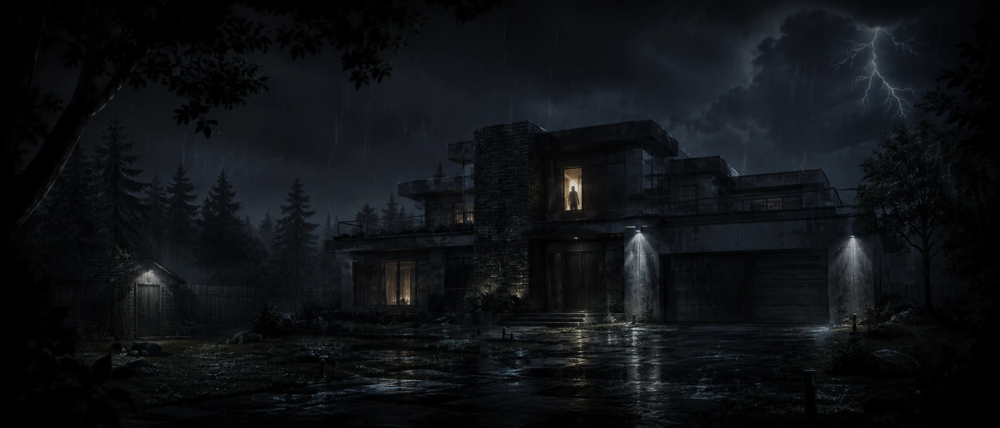

La luz no alcanza
para verlo todo.
Orienta la linterna y recorre la mansión. Las puertas, los objetos y las habitaciones cuentan más de lo que parece.

YA DISPONIBLE · WINDOWS
EL CASO HOLLOW CREEK
Doce años de silencio.
Tres nuevas desapariciones.
Una casa que no ha terminado contigo.
Terror 2D · Exploración · Español e inglés
28 SEGUNDOS DENTRO
La llegada, las primeras pistas y el momento en que investigar deja de ser lo importante.
Orienta la linterna y recorre la mansión. Las puertas, los objetos y las habitaciones cuentan más de lo que parece.
Un golpe en el piso de arriba. Un teléfono. Pasos que no son los tuyos. Decidir cuándo seguir puede ser tan importante como encontrar una llave.
Corre, busca dónde esconderte y presta atención a lo que tienes alrededor. No todas las rutas seguirán siendo seguras.
LA HISTORIA
Hollow Creek dejó de hablar del caso, pero nunca dejó de vivir alrededor de él. Comercios que cerraban antes, calles evitadas de noche y familias que seguían esperando una respuesta.
Alex y Sebas entran a la antigua propiedad Hollow cuando tres nuevas desapariciones vuelven a señalar el corredor norte. Buscan una explicación. La casa tiene otros planes.

DENTRO DEL JUEGO
Capturas reales del proyecto. Toca una imagen para verla completa.


DISPONIBLE PARA WINDOWS
El caso continúa dentro de Hollow House.